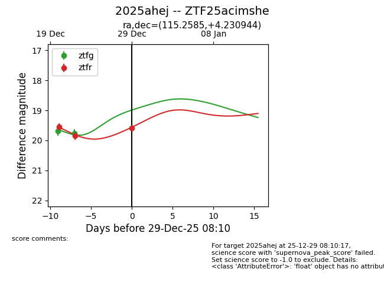
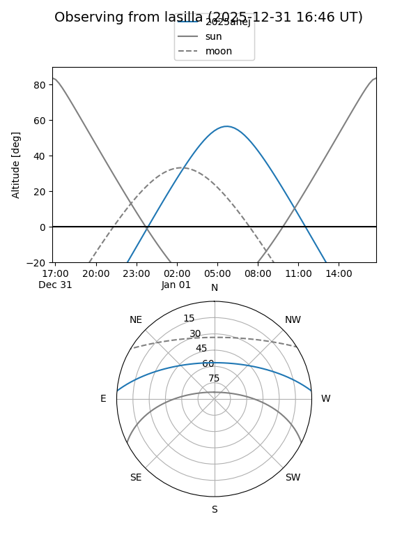
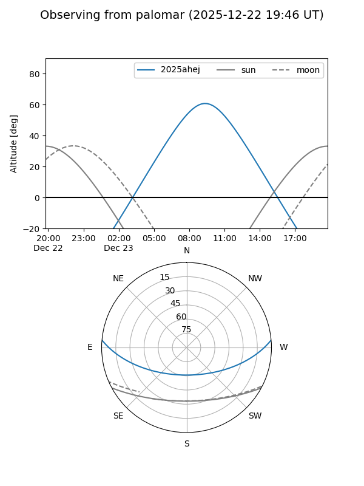
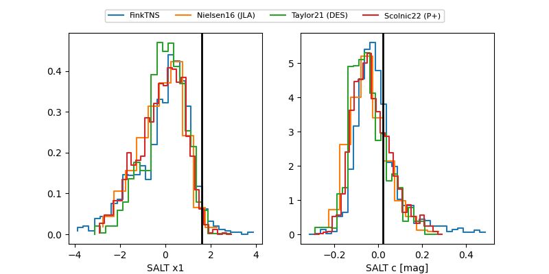

2025ahej
Target 2025ahej at 2025-12-31 17:00
Aliases and brokers:
FINK:
Lasair:
ALeRCE:
TNS:
YSE:
alt names
ZTF25acimshe (ztf,fink_ztf)
2025ahej (tns,yse)
Coordinates:
equatorial (ra, dec) = 115.2585,+4.23094
equatorial (HMS+DMS) = 07:41:02.03,+04:13:51.40
galactic (l, b) = (214.8125,+12.95683)
Flags:
Photometry:
last ztfg=19.76, ztfr=19.58
2 ztfg, 3 ztfr detections
Lightcurve

Visibility


Additional plots
